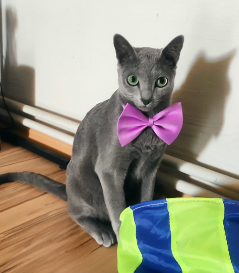
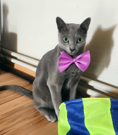

My Little Poli

Polina - ruská moudrá kočka
Poli se narodila 20. května 2019 v prvním vrhu ruské modré kočky Lindy Mollis Felis v
Českých Heřmanicích. Netrvalo diouho a její velké zelené oči a elegantní křivky přilákaly první
zájemce.
Slovo dalo slovo a hned při první návštěvě bylo jasné, že to je ideální kočičí
parťák na dlouhé zimní večery.
O tři měsíce později už vyrážela Poli na svoje první velké
dobrodružství daleko od své kočičí mámy do nové rodiny.
Jaké jsou ruské modré kočky?
POVAHA
Ruské modré kočky jsou považovány za plyšové, mírně aktivní kočky.
Zatímco ve věku kotěte jsou hravé a temperamentni, v dospělosti se stávaji jemnými, suverénními
atlety.
Často jsou proto nabízeny jako ideální kočky do bytu. Ale pozor ruská modrá
kočka je velmi inteligentní, miluje výzvy a zábavu!
VZHLED
Postava ruské modré kočky je půvabná. Díky dlouhým nohám se tato tři až
pět kilogramů vážící středně velká kočka značně liší od poněkud podsadité postavy britské
krátkosrsté kočky.
Více se podobá kočce kartouzské - pokud by ovšem měla žluté oči
jako kartouzská kočka a ne smaragdové
HISTORIE
Postava ruské modré kočky je půvabná. Díky dlouhým nohám se tato tři až pět kilogramů vážící středně velká kočka značně liší od poněkud podsadité postavy britské krátkosrsté kočky. Více se podobá kočce kartouzské - pokud by ovšem měla žluté oči jako kartouzská kočka a ne smaragdové
Fotogalerie


 
